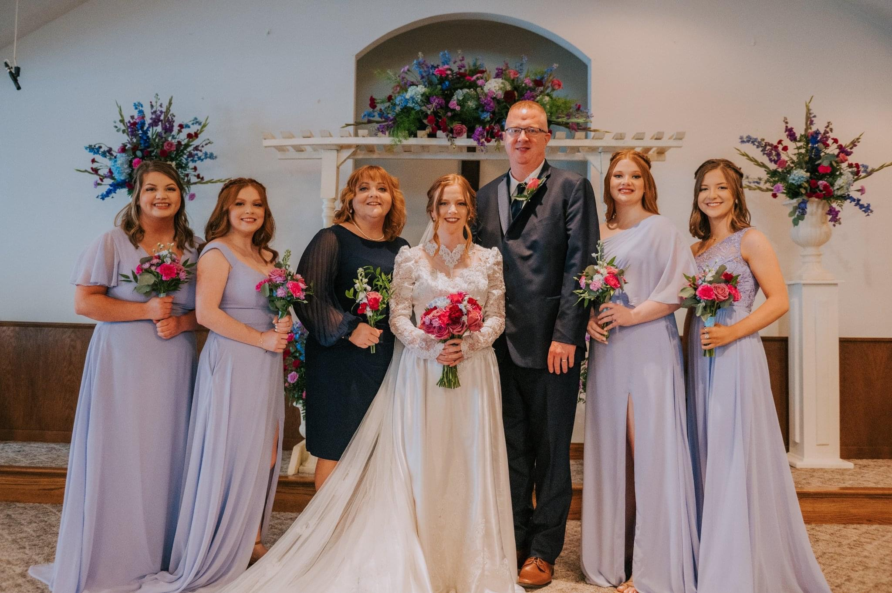

About Me
Hello, I’m Alex Kincer. I’m a sophomore at Georgetown College and I am on a cheerleading scholarship. Currently, I am a Chemistry major with a Computer Science minor.
Family

I am one of the youngest daughters to Georgie and Keith Kincer. I have 3 older sisters, Freddi, Leanna, and Cameron, and a twin sister, Bailey. My older sisters went to Midway University, the University of Pikeville, and Southeast Community and Technical College to earn degrees in Marketing and Nursing. My twin sister is a current sophomore at the University of the Cumberlands and is pursuing a degree in Psychology. Though all of us are pursuing different paths of life, we each continued or are still continuing our athletic careers. Freddi and Leanna ran Track and Cross Country, Cameron played Soccer, Bailey in playing Volleyball, and I am on the Competitive Cheerleading team.
Early Life
I am originally from Neon, Kentucky and have lived there my entire life. Both of my parents grew up in Neon, and met when my mother was in the 7th grade, and have been together ever since. My grandparents still live in Neon, right beside of my parents, actually. Neon is as eastern as you can get, being less than 10 minutes from the Virginia line. Being that close to Virginia, I have always been surrounded by mountains, so Georgetown was a very different atmosphere. If the description above hasn’t given you an idea of where I’m from, I was greatly affected in the Summer of 2022 Eastern Kentucky flooding.
The photo above was taken from my grandparents’ front porch the morning after the first round of flooding. Due to being from the poverend area of Appalachia and the now flooded area, I longed to get out of the mountains and make something of myself that would put me in the place to not need to move back. I love where I am from, and my family will always be there, but the mountains are not my forver home.
Why Georgetown?
When choosing a college, my top 3 requirements were that it had to be atleast 2 hours away, offer me a cheerleading scholarship, and have a good chemistry program. I visited Georgetown College in the Fall of 2021 for a cheerleading clinic and absolutely loved it. After the clinic was over, Coach Joanie conversed with my parents and I and made an official offer for me to continue my athletic career. Georgetown checked all the boxes with being a little over 3 hours away from home.
Life At Georgetown
At Georgetown, I have pursued my interest in Chemistry and continued to progress in the sport of Competitive Cheerleading. In my first year, I completed General Chemistry 1 and 2 with labs corresponding, and completed Computer Science Course 115. In cheerleading, I made the competition squad, competiting in 6 total competitions and winning GC’s 3rd consecutive Mid-South Conference Title. I also cheered all mens basketball games and home football games. In my second year, so far, I have made the competition team, again, and have cheered at Rupp Arena for mens basketball exhibition and cheered all home football games thus far.

In the picture to the right, you can see me in a stunt at a recent football game. I have just recently been switched positions to a flyer on the team and have, so far, been very successful. I genuinely love cheerleading, and hope to continue GC’s cheer legacy while I am here.